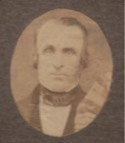

Beaubien-Perrault-Benington - Person Sheet
Beaubien-Perrault-Benington - Person Sheet

Birth16 Jun 1771, Québec, Québec
Death17 Nov 1828, Québec, Québec
Burial21 Nov 1828, Rivière-Ouelle, Québec
Occupationmarchand, seigneur, juge
FatherJean Casgrain (1719-1802)
MotherM. Marguerite Cazault (ca1738-1825)
Spouses
Birth11 Feb 1776, Québec, Québec
Death12 Mar 1825, Rivière-Ouelle, Québec311
Burial14 Mar 1825, Rivière-Ouelle, Québec311
FatherJean-Baptiste Bonenfant (ca1713-1797)
MotherMarie Josephte Côté (1737-1820)
Marriage27 Jul 1790, Rivière-Ouelle, Québec
ChildrenPierre Thomas (1797-1863)
Sophie (1799-1865)
Charles Eusèbe (1800-1848)
M. Luce (1802-1870)
M. Justine (1804-1882)
Olivier Eugène (1812-1864)
Notes for Pierre Casgrain
[LBP] Quitta l'école à12 ou 13 ans pour gagner sa fortune faisant la traite dans les pays d'en-haut. S'acheta une cassette et devint colporteur. En tournée, fit naufrage à l'Ile aux Coudres et se fixa à Rivière-Ouelle. Il y ouvrit magasin et fit bonne fortune. Devint Seigneur de Rivière-Ouelle.
[DBC] CASGRAIN, PIERRE, homme d’affaires, juge de paix, seigneur et officier de milice, né le 16 juin 1771 à Québec, fils de Jean Casgrain et de Marguerite Cazeau ; décédé le 17 novembre 1828 à Québec et inhumé quatre jours plus tard sous le banc seigneurial dans l’église de Rivière-Ouelle, Bas-Canada.
Pierre Casgrain quitta la maison paternelle vers l’âge de 12 ou 13 ans pour entrer au service d’un marchand de fourrures qui faisait la traite dans le Nord-Ouest. Puis, après avoir exercé pendant quelques années le métier de marchand ambulant, il se fixa à Rivière-Ouelle où il épousa, le 27 juillet 1790, Marie-Marguerite Bonnenfant, âgée de 14 ans, fille d’un marchand de l’endroit ; il y ouvrit un magasin général. Toutefois, les informations manquent sur les conditions et les moyens qui lui permirent de mettre sur pied son commerce.
En 1797, Casgrain établit un magasin général à Kamouraska, qu’il confia à François Perrault. Ce dernier s’engagea alors, moyennant 10 % du prix de vente, à écouler les marchandises que lui fournirait le marchand de Rivière-Ouelle. Le 12 février de l’année suivante, Casgrain versa £200 au marchand de Québec James McCallum pour acquérir une vaste demeure près de l’église de Rivière-Ouelle. Deux jours plus tard, il signa un contrat d’association avec James et John McCallum. Casgrain, qui détenait les deux cinquièmes des actions de l’entreprise, s’engagea à ouvrir un magasin dans sa nouvelle maison et à construire deux hangars, l’un à Rivière-Ouelle, l’autre à Kamouraska, afin de stocker dans chacun au moins 10 000 à 15 000 minots de blé. Casgrain s’intéressa aussi au commerce de la pêche et acheta en 1802 une pêcherie dans la seigneurie Saint-Denis-De La Bouteillerie. Dix ans plus tard, il s’associa avec Amable Dionne*, marchand de Kamouraska. La société Casgrain et Dionne, qui faisait le commerce des marchandises sèches et liquides, fut dissoute à l’amiable en 1818.
L’activité commerciale de Casgrain l’amena à faire crédit à une partie de sa clientèle, constituée essentiellement de fermiers de Rivière-Ouelle. Les sommes dues par obligation variaient normalement entre £10 et £85, étaient payables à date fixe et portaient intérêt légal de 6 %. Casgrain convertit une partie de ses liquidités en biens fonciers. En 1812 et 1813, il acheta successivement les trois parts de la seigneurie de la Rivière-Ouelle aux frères Pierre, Olivier et Michel Perrault, moyennant £12 000. Les revenus seigneuriaux, de même que la location des moulins à farine et à scier, des pêcheries de saumon et de marsouin, du bac de la rivière Ouelle et de la terre du domaine, lui assurèrent une certaine aisance. De fait, Casgrain menait, semble-t-il, un grand train de vie. Lorsque parents ou amis lui rendaient visite, ils avaient droit à de somptueux banquets. Casgrain comptait à son service plusieurs domestiques voués à l’art culinaire : un maître d’hôtel, un chef cuisinier, un aide-cuisinier et une pâtissière. En 1815, il accueillit à sa table l’administrateur sir Gordon Drummond* et le coadjuteur Bernard-Claude Panet.
En février 1817, Casgrain obtint de la chambre d’Assemblée du Bas-Canada le droit exclusif d’exploiter un pont-levis à péage sur la rivière Ouelle pour une durée de 50 ans. L’entrepreneur Jean-Baptiste Bédard* avait été chargé de la construction du pont, qui fut terminé en octobre 1816. Ce monopole d’exploitation suscita toutefois le mécontentement des habitants qui se voyaient obligés de payer un droit de passage. Aussi certains décidèrent d’ériger un pont de fortune sur la rivière en 1823, mais le projet échoua après que Casgrain eut menacé de les poursuivre en justice pour une somme de £1 000.
Casgrain s’associa avec son fils Pierre-Thomas en 1821 pour commercer. Il investit £1 500 dans la société, et les profits devaient être partagés également entre les deux hommes. Connue sous le nom de Pierre et Pierre-Thomas Casgrain, la société cessa d’exister le 14 septembre 1826.
Faute de documentation, la vie sociale de Casgrain reste mal connue. Il signa la déclaration de loyauté à la couronne britannique en 1794. Cinq ans plus tard, il obtint une commission de juge de paix pour le district de Québec, qui lui fut périodiquement renouvelée. Il s’enrôla comme aide-major dans le bataillon de milice de Rivière-Ouelle en 1812. Il participa aux réunions de la Société d’agriculture du district de Québec à partir de 1819. La même année, il comptait parmi les actionnaires de la Banque de Québec.
Pierre Casgrain et sa femme eurent 13 enfants dont 6 atteignirent l’âge adulte. Bien nanties d’une dot de £1 000 chacune, les filles firent de bons mariages Marie-Sophie épousa le notaire François Letellier de Saint-Just, Luce l’avocat Philippe Panet* et Marie-Justine le docteur Charles Butler Maguire. À la mort de sa femme en 1825, Casgrain liquida ses biens mobiliers. Cette vente rapporta au delà de £675, et les profits furent divisés également entre les enfants. Casgrain mourut trois ans plus tard chez sa fille Marie-Sophie. Par testament, il légua £1 500 à chacune de ses filles en plus des actions qu’il détenait dans les pêcheries de marsouin. Son fils aîné, Pierre-Thomas, reçut la seigneurie de la Rivière-Ouelle, quelques terres et le magasin. Olivier-Eugène hérita de la partie de la seigneurie de L’Islet que son père avait acquise en 1815, tandis que le patrimoine de Charles-Eusèbe* fut constitué de terres, de rentes et d’une propriété à Québec.
Serge Gagnon
ANQ-Q, CE1-1, 16 juin 1771 ; CE3-1, 27 juill. 1790, 21 nov. 1828 ; CN1-262, 12, 14 févr. 1798 ; CN3-17, 10 juin 1797 ; CN3-30, 5 déc. 1812, 2 mai, 7 nov., 2, 8 déc. 1813, 10 sept., 18, 28 déc. 1815, 2 mai 1819, 18 juill. 1820, 9 janv., 25 avril 1821, 6 mai 1823, 7 août 1825, 14 sept. 1826, 8 mars, 6 sept. 1827 ; CN3-55, 25 mai 1812.— APC, RG 68, General index, 1651–1841 : 335, 338, 345, 347, 359.— B.-C., chambre d’Assemblée, Journaux, 1814–1817.— La Gazette de Québec, 24 juill. 1794, 8 avril, 2, 9, 16 août, 18 oct. 1819, 9 août 1821.— P.-G. Roy, Fils de Québec, 2 : 155–156.— P.-B. Casgrain, Mémorial des familles Casgrain, Baby et Perrault du Canada (Québec, 1898).— P.-H. Hudon, Rivière-Ouelle de la Bouteillerie ; 3 siècles de vie (Ottawa, 1972).
1 est la source de beaucoup de ce qui est dans DBC. Casgrain était au service de M de Rocheblave de Michillimakinac aux Illinois a la Nouvelle-Orleans.
"Il était bel homme, grand, assez replet, au visage souriant, frais et vermeil, comme on peut en juger par son portrait peint par Dulongpré. Sa prestance gracieuse, son air aimable, son accueil avenant, prévenaient en sa faveur. D'un commerce doux et d'une sensibilité exquise, on s'attachait a lui et il comptait un grand nombre d'amis"
13 enfants
Il existe une vignette du manoir de la Bouteillerie dans Harper's Magazine, fev 1884.
3 [mariage] temoins Charlotte Bonenfant (soeur de Marie), Louis et Philippe Côté (oncles de Marie)
[DBC, Amable DIonne] Issu d’une des premières familles à s’établir à Kamouraska, Amable Dionne fréquente l’école pendant un an et demi environ. En 1802, il signe un contrat d’engagement avec un marchand de Rivière-Ouelle, Pierre Casgrain*, dont il devient d’abord le commis, puis l’associé en 1811. Un an après son mariage, Dionne quitte Rivière-Ouelle avec sa femme pour aller s’établir à Kamouraska où il devient marchand pour la société Casgrain et Dionne dans une maison appartenant à son associé. En 1818, la société est dissoute à l’amiable, et Dionne s’installe à son compte.
https://archive.macleans.ca/article/1914/11/1/the-story-of-the-casgrain-family
[DBC] CASGRAIN, PIERRE, homme d’affaires, juge de paix, seigneur et officier de milice, né le 16 juin 1771 à Québec, fils de Jean Casgrain et de Marguerite Cazeau ; décédé le 17 novembre 1828 à Québec et inhumé quatre jours plus tard sous le banc seigneurial dans l’église de Rivière-Ouelle, Bas-Canada.
Pierre Casgrain quitta la maison paternelle vers l’âge de 12 ou 13 ans pour entrer au service d’un marchand de fourrures qui faisait la traite dans le Nord-Ouest. Puis, après avoir exercé pendant quelques années le métier de marchand ambulant, il se fixa à Rivière-Ouelle où il épousa, le 27 juillet 1790, Marie-Marguerite Bonnenfant, âgée de 14 ans, fille d’un marchand de l’endroit ; il y ouvrit un magasin général. Toutefois, les informations manquent sur les conditions et les moyens qui lui permirent de mettre sur pied son commerce.
En 1797, Casgrain établit un magasin général à Kamouraska, qu’il confia à François Perrault. Ce dernier s’engagea alors, moyennant 10 % du prix de vente, à écouler les marchandises que lui fournirait le marchand de Rivière-Ouelle. Le 12 février de l’année suivante, Casgrain versa £200 au marchand de Québec James McCallum pour acquérir une vaste demeure près de l’église de Rivière-Ouelle. Deux jours plus tard, il signa un contrat d’association avec James et John McCallum. Casgrain, qui détenait les deux cinquièmes des actions de l’entreprise, s’engagea à ouvrir un magasin dans sa nouvelle maison et à construire deux hangars, l’un à Rivière-Ouelle, l’autre à Kamouraska, afin de stocker dans chacun au moins 10 000 à 15 000 minots de blé. Casgrain s’intéressa aussi au commerce de la pêche et acheta en 1802 une pêcherie dans la seigneurie Saint-Denis-De La Bouteillerie. Dix ans plus tard, il s’associa avec Amable Dionne*, marchand de Kamouraska. La société Casgrain et Dionne, qui faisait le commerce des marchandises sèches et liquides, fut dissoute à l’amiable en 1818.
L’activité commerciale de Casgrain l’amena à faire crédit à une partie de sa clientèle, constituée essentiellement de fermiers de Rivière-Ouelle. Les sommes dues par obligation variaient normalement entre £10 et £85, étaient payables à date fixe et portaient intérêt légal de 6 %. Casgrain convertit une partie de ses liquidités en biens fonciers. En 1812 et 1813, il acheta successivement les trois parts de la seigneurie de la Rivière-Ouelle aux frères Pierre, Olivier et Michel Perrault, moyennant £12 000. Les revenus seigneuriaux, de même que la location des moulins à farine et à scier, des pêcheries de saumon et de marsouin, du bac de la rivière Ouelle et de la terre du domaine, lui assurèrent une certaine aisance. De fait, Casgrain menait, semble-t-il, un grand train de vie. Lorsque parents ou amis lui rendaient visite, ils avaient droit à de somptueux banquets. Casgrain comptait à son service plusieurs domestiques voués à l’art culinaire : un maître d’hôtel, un chef cuisinier, un aide-cuisinier et une pâtissière. En 1815, il accueillit à sa table l’administrateur sir Gordon Drummond* et le coadjuteur Bernard-Claude Panet.
En février 1817, Casgrain obtint de la chambre d’Assemblée du Bas-Canada le droit exclusif d’exploiter un pont-levis à péage sur la rivière Ouelle pour une durée de 50 ans. L’entrepreneur Jean-Baptiste Bédard* avait été chargé de la construction du pont, qui fut terminé en octobre 1816. Ce monopole d’exploitation suscita toutefois le mécontentement des habitants qui se voyaient obligés de payer un droit de passage. Aussi certains décidèrent d’ériger un pont de fortune sur la rivière en 1823, mais le projet échoua après que Casgrain eut menacé de les poursuivre en justice pour une somme de £1 000.
Casgrain s’associa avec son fils Pierre-Thomas en 1821 pour commercer. Il investit £1 500 dans la société, et les profits devaient être partagés également entre les deux hommes. Connue sous le nom de Pierre et Pierre-Thomas Casgrain, la société cessa d’exister le 14 septembre 1826.
Faute de documentation, la vie sociale de Casgrain reste mal connue. Il signa la déclaration de loyauté à la couronne britannique en 1794. Cinq ans plus tard, il obtint une commission de juge de paix pour le district de Québec, qui lui fut périodiquement renouvelée. Il s’enrôla comme aide-major dans le bataillon de milice de Rivière-Ouelle en 1812. Il participa aux réunions de la Société d’agriculture du district de Québec à partir de 1819. La même année, il comptait parmi les actionnaires de la Banque de Québec.
Pierre Casgrain et sa femme eurent 13 enfants dont 6 atteignirent l’âge adulte. Bien nanties d’une dot de £1 000 chacune, les filles firent de bons mariages Marie-Sophie épousa le notaire François Letellier de Saint-Just, Luce l’avocat Philippe Panet* et Marie-Justine le docteur Charles Butler Maguire. À la mort de sa femme en 1825, Casgrain liquida ses biens mobiliers. Cette vente rapporta au delà de £675, et les profits furent divisés également entre les enfants. Casgrain mourut trois ans plus tard chez sa fille Marie-Sophie. Par testament, il légua £1 500 à chacune de ses filles en plus des actions qu’il détenait dans les pêcheries de marsouin. Son fils aîné, Pierre-Thomas, reçut la seigneurie de la Rivière-Ouelle, quelques terres et le magasin. Olivier-Eugène hérita de la partie de la seigneurie de L’Islet que son père avait acquise en 1815, tandis que le patrimoine de Charles-Eusèbe* fut constitué de terres, de rentes et d’une propriété à Québec.
Serge Gagnon
ANQ-Q, CE1-1, 16 juin 1771 ; CE3-1, 27 juill. 1790, 21 nov. 1828 ; CN1-262, 12, 14 févr. 1798 ; CN3-17, 10 juin 1797 ; CN3-30, 5 déc. 1812, 2 mai, 7 nov., 2, 8 déc. 1813, 10 sept., 18, 28 déc. 1815, 2 mai 1819, 18 juill. 1820, 9 janv., 25 avril 1821, 6 mai 1823, 7 août 1825, 14 sept. 1826, 8 mars, 6 sept. 1827 ; CN3-55, 25 mai 1812.— APC, RG 68, General index, 1651–1841 : 335, 338, 345, 347, 359.— B.-C., chambre d’Assemblée, Journaux, 1814–1817.— La Gazette de Québec, 24 juill. 1794, 8 avril, 2, 9, 16 août, 18 oct. 1819, 9 août 1821.— P.-G. Roy, Fils de Québec, 2 : 155–156.— P.-B. Casgrain, Mémorial des familles Casgrain, Baby et Perrault du Canada (Québec, 1898).— P.-H. Hudon, Rivière-Ouelle de la Bouteillerie ; 3 siècles de vie (Ottawa, 1972).
1 est la source de beaucoup de ce qui est dans DBC. Casgrain était au service de M de Rocheblave de Michillimakinac aux Illinois a la Nouvelle-Orleans.
"Il était bel homme, grand, assez replet, au visage souriant, frais et vermeil, comme on peut en juger par son portrait peint par Dulongpré. Sa prestance gracieuse, son air aimable, son accueil avenant, prévenaient en sa faveur. D'un commerce doux et d'une sensibilité exquise, on s'attachait a lui et il comptait un grand nombre d'amis"
13 enfants
Il existe une vignette du manoir de la Bouteillerie dans Harper's Magazine, fev 1884.
3 [mariage] temoins Charlotte Bonenfant (soeur de Marie), Louis et Philippe Côté (oncles de Marie)
[DBC, Amable DIonne] Issu d’une des premières familles à s’établir à Kamouraska, Amable Dionne fréquente l’école pendant un an et demi environ. En 1802, il signe un contrat d’engagement avec un marchand de Rivière-Ouelle, Pierre Casgrain*, dont il devient d’abord le commis, puis l’associé en 1811. Un an après son mariage, Dionne quitte Rivière-Ouelle avec sa femme pour aller s’établir à Kamouraska où il devient marchand pour la société Casgrain et Dionne dans une maison appartenant à son associé. En 1818, la société est dissoute à l’amiable, et Dionne s’installe à son compte.
https://archive.macleans.ca/article/1914/11/1/the-story-of-the-casgrain-family